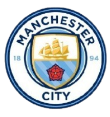
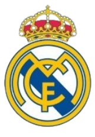
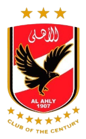
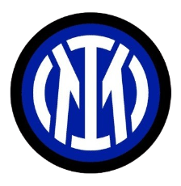
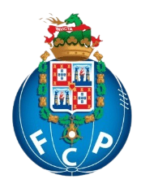
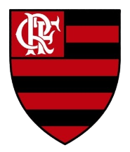
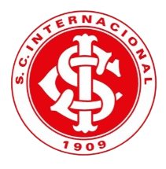
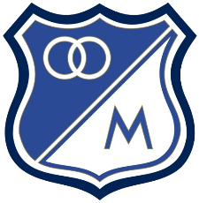
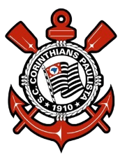
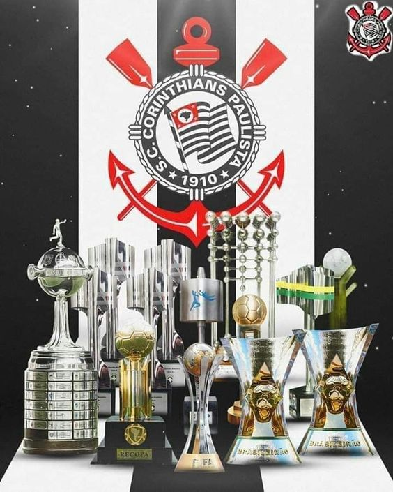

Manchester City é eleito melhor time do mundo em 2023
(Três times brasileiros aparecem no top 10)
Clube inglês, encabeça lista da IFFHS, que ainda conta com Palmeiras,Fortaleza e Fluminense.
O Manchester City é apontado como melhor time do mundo de acordo com o
ranking divulgado pela Federação Internacional de História e
Estatísticas do Futebol (IFFHS). O levantamento tem como critério o
desempenho das equipes entre novembro de 2022 e outubro de 2023.
A lista divulgada pela organização leva em conta 394 clubes espalhados
pelo mundo. A equipe de Pep Guardiola mantém a primeira colocação há
três meses consecutivos. A conquista da Tríplice Coroa por parte do time
inglês na temporada passada é a grande responsável pelo título de
“melhor time do mundo”.
Um nome que chama a atenção nas primeiras posições é o do Al Ahly, do
Egito, que pulou para o terceiro lugar. Já a decepção fica por conta do
Flamengo, que caiu da sexta para a décima primeira posição. Entres as
equipes mencionadas no ranking aparecem dezoito brasileiras: três no top
10, sete no top 20 e doze no top 100.
Os times brasileiros com as
melhores posições são:
Os 7 Melhores times do mundo – Ranking IFFHS (Nov/22 a Out/23)
 1 - Manchester City (ING) – 296 pontos
 2 - Real Madrid (ESP) – 288 pontos
3 - Al Ahly (EGY) – 244 pontos
4 - Internazionale (ITA) – 241 pontos
5 - Palmeiras – 212 pontos
6 - Fortaleza – 211,5 pontos
7 - Porto (POR) – 207 pontos
Os outros times brasileiros que completam a lista são: Botafogo (25º), Corinthians (32º), Red Bull Bragantino (33º),
Athletico-PR (41º), Atlético-MG (46º), Goiás (111º), América-MG (165º), Santos (201º). Grêmio (215º), Cuiabá (259º),
Bahia (324º) e Cruzeiro (365º).
Melhores times da Conmebol – Ranking IFFHS (Nov/22 a Out/23)
O ranking também é dividido por confederações. Neste recorte, os times brasileiros vencem de lavada os rivais.
São sete representantes no top 10. Um detalhe curioso é que nenhum clube argentino aparece entre os dez primeiros e
apenas três ocupam o top 20.
1 - Palmeiras – 212 pontos
2 - Fortaleza – 211,5 pontos
3 - Fluminense – 199pontos

4 - Flamengo – 196 pontos
5 - São Paulo – 190 pontos

6 - Internacional – 180 pontos

7 - Millonarios (COL) - 175,5 pontos
MEU TIME DOS SONHOS
CORINTHIANS

O Sport Club Corinthians Paulista, comumente referido como Corinthians, ou ainda pelo seu acrônimo SCCP, é um clube poliesportivo brasileiro da cidade de São Paulo, capital do estado de São Paulo. Foi fundado como uma equipe de futebol no dia 1 de setembro de 1910 por um grupo de operários do bairro Bom Retiro. Seu nome foi inspirado no Corinthian Football Club de Londres, que excursionava pelo Brasil.
O clube é um dos mais bem sucedidos do Brasil e das Américas nos últimos anos. É o terceiro maior campeão nacional, com onze conquistas, ficando atrás somente do Palmeiras (18 conquistas) e Flamengo (14 conquistas). Conquistou dois Mundiais de Clubes da FIFA, uma Copa Libertadores da América de forma invicta, uma Recopa Sul-Americana, sete Campeonatos Brasileiros, três Copas do Brasil, uma Supercopa do Brasil, cinco Torneios Rio-São Paulo (recordista, ao lado de Palmeiras e Santos), 30 Campeonatos Paulistas (atual recordista) e uma Copa Bandeirantes (único vencedor).

Suas cores tradicionais são o branco e o preto. Desde 2014, manda suas partidas de futebol na Neo Química Arena. Seus rivais históricos são o Palmeiras, com quem disputa o Derby Paulista; o São Paulo, com quem disputa o Majestoso; e o Santos, com quem disputa o Clássico Alvinegro. Sua torcida é conhecida como "Fiel" e seus torcedores são estimados em aproximadamente 30 milhões espalhados por todo o Brasil e pelo mundo, atrás nacionalmente somente do carioca Flamengo. A sua torcida é considerada também uma das maiores torcidas do mundo.
ESCALACAO DOS SONHOS
Aqui o aluno deverá inserir o seu time do coração
Aqui deverá listar os principais títulos do seu time e a sua escalação dos sonhos.

 5 - São Paulo – 190 pontos
5 - São Paulo – 190 pontos